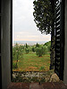

This is the scene on the way to Montalcino (all roads lead to Montalcino!). It looks a lot like the scene on the way to Sienna, and the scene on the way to the grocery store. We were surrounded by beautiful countryside for most of our travels.
This is the scene on the way to Montalcino (all roads lead to Montalcino!). It looks a lot like the scene on the way to Sienna, and the scene on the way to the grocery store. We were surrounded by beautiful countryside for most of our travels.This is a short chronicle of my visit to Italy. Click on the thumbnails to see a larger view of each photograph. Enjoy!
 The house we stayed in was called Pozzarello and it was built around the year 1200 as the home of the gardner who tended the grounds of the adjacent castle. The thick walls kept us nice and cool inside, despite the blistering mid-day heat. This is the view from our bedroom window.
This is the scene on the way to Montalcino (all roads lead to Montalcino!). It looks a lot like the scene on the way to Sienna, and the scene on the way to the grocery store. We were surrounded by beautiful countryside for most of our travels.
 The closest city to our villa was Sienna, about 30 minutes away. We spent many days exploring the steep and crooked streets, sampling the local cuisine at outdoor restaurants, and stopping in the dark and echoey Duomo to escape the sun.
The closest city to our villa was Sienna, about 30 minutes away. We spent many days exploring the steep and crooked streets, sampling the local cuisine at outdoor restaurants, and stopping in the dark and echoey Duomo to escape the sun.
 If efforts to do social work are couched in selfish motives, then they will die a premature death. Why would my efforts get politicised? I have values I inherited from my father. He helped many. Anyone, even a postman knocking on our door would get a glass of water and some sweets.
If efforts to do social work are couched in selfish motives, then they will die a premature death. Why would my efforts get politicised? I have values I inherited from my father. He helped many. Anyone, even a postman knocking on our door would get a glass of water and some sweets.
 Walking at random through the streets, we came by chance upon the Cathedral of Notre Dame. I shall long remember my first impression of the scene within. The lofty gothic ceiling arched far above my head and through the stained windows the light came but dimly - it was all still, solemn and religious.
Walking at random through the streets, we came by chance upon the Cathedral of Notre Dame. I shall long remember my first impression of the scene within. The lofty gothic ceiling arched far above my head and through the stained windows the light came but dimly - it was all still, solemn and religious.
 It always seems to me as if the lavender was a little woman in a green dress, with a lavender bonnet and a white kerchief. She's one of those strong, sweet, wholesome people, who always rest you, and her sweetness lingers long after she goes away.
It always seems to me as if the lavender was a little woman in a green dress, with a lavender bonnet and a white kerchief. She's one of those strong, sweet, wholesome people, who always rest you, and her sweetness lingers long after she goes away.